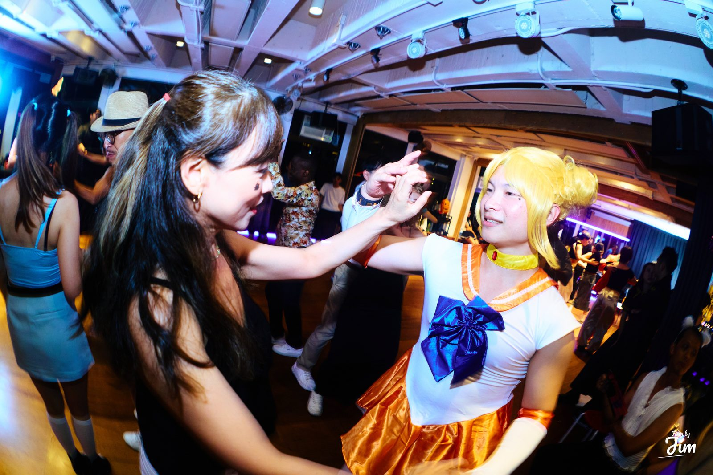

 2026.10.15 – 11.03 萬聖節 2026 全站的萬聖節主題已經收起來了。特效相框和小遊戲都還留著，想玩隨時能玩。 玩小遊戲 開啟萬聖節特效相框 10.30、10.31 萬聖節相簿→
2026.10.15 – 10.18 Taiwan Bachata Crush 2026 四個晚上的照片與影片都在首頁的相簿和影片區。 10.15 · Preparty→ 10.16 · Neon 螢光狂潮→ 10.17 · Dressy & Sultry 華麗微醺→ 10.18 · PJ 睡衣派對→ 看照片 看影片 在這場活動裡找自己